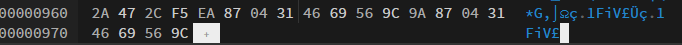
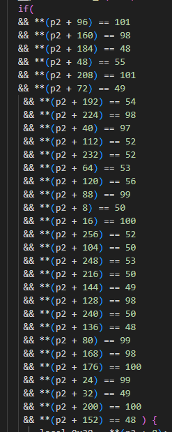
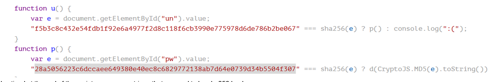
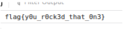
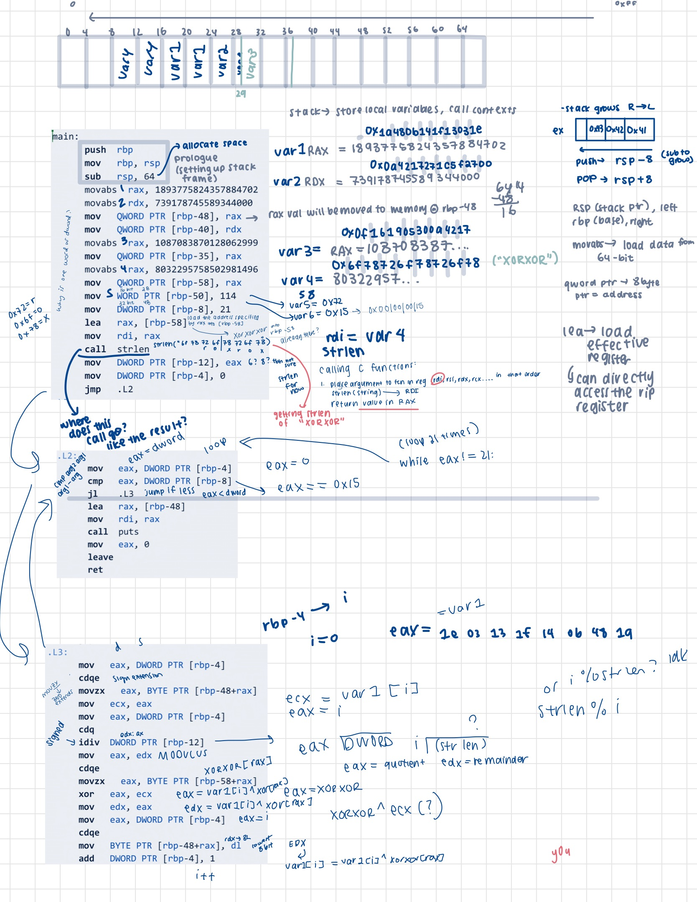
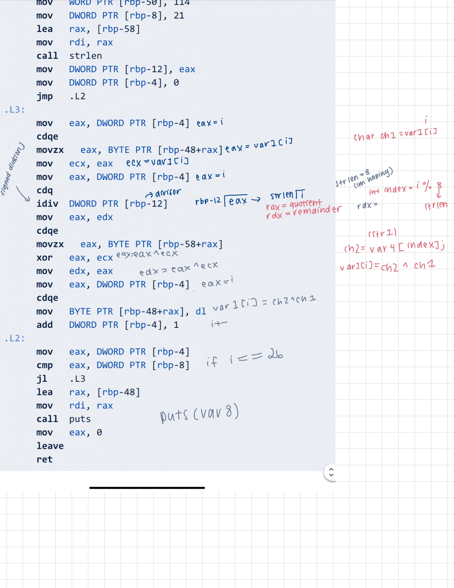
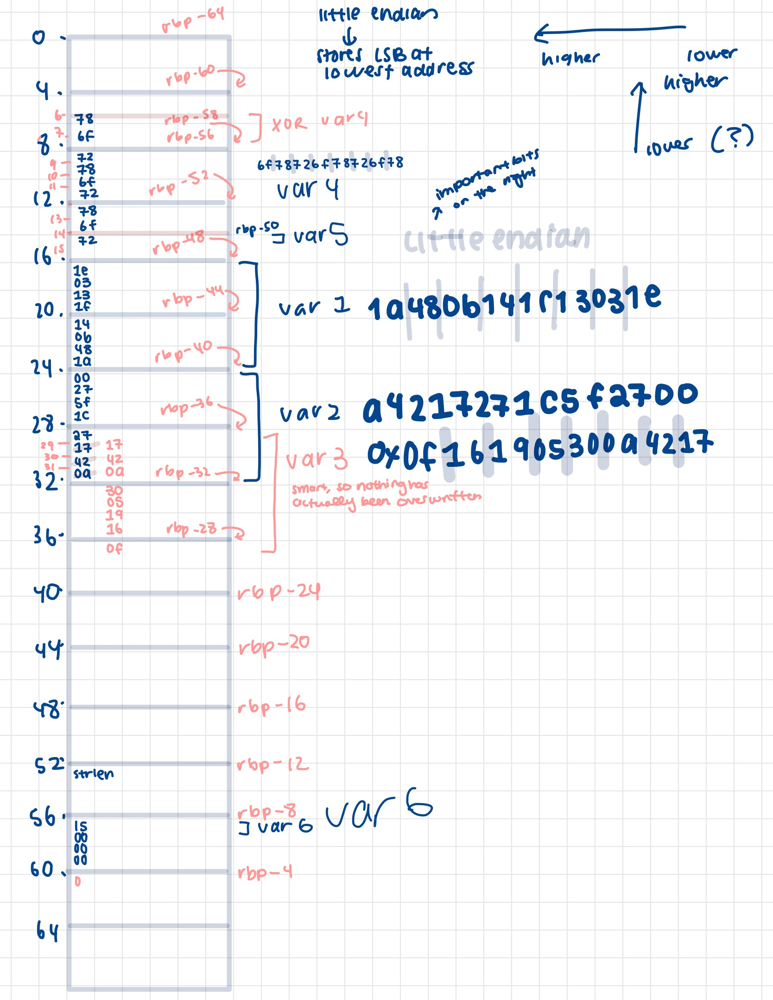
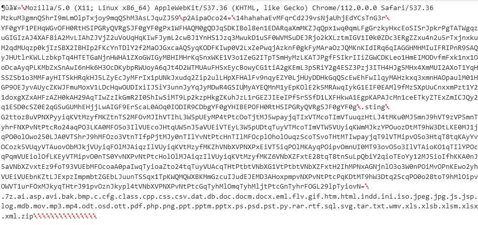

Recently I completed Tier 1 of Target’s Cyber Defense Challenge offered to members of the WiCys (Women in Cybersecurity) organization. It was a CTF comprised of four categories: cryptography/steganography, reverse engineering, USB forensics, and cyber threat intelligence. In this second part, I will go over the challenges in the reverse engineering section. In my opinion, this was the most technical challenge as knowledge of basic assembly (x86) and the C programming language was required.
Shoutout to Lan Che for bringing up the alternative solutions for A5M and Yarrr, would suggest looking at her writeups :3
Challenges
A5M
100 points
My reversing skills are not what they use to be. Can you analyze the assembly code and recover the flag?
*TODO: Go more in depth with tracing through the assembly
In this challenge, a file called A5M.bin was given although it was determined that it was a simple txt file after running the file command. The file included some assembly. I decided to statically analyze the file and trace through the assembly line by line while keeping track of the stack.
I translated the assembly into C code to make it easier for me to understand:
long long int var1 = 1893775824357884702;
long long int var2 = 739178745589344000;
long long int var3 = 1087083870128062999;
long long int var4 = 8032295758502981496; // "xorxorxor"
unsigned short var5 = 114;
unsigned int var6 = 21;
unsigned char str1[] = {0x1e, 0x03, 0x13, 0x1f, 0x14, 0x0b, 0x48, 0x1a, 0x00, 0x27, 0x5f, 0x1c, 0x27, 0x17, 0x42, 0x0a, 0x30, 0x05, 0x19, 0x16, 0x0f};
unsigned char str2[] = {0x78, 0x6f, 0x72, 0x78, 0x6f, 0x72, 0x78, 0x6f, 0x72};
for (int i = 0; i < var6; i++) {
unsigned char ch1 = str1[i];
int index = i % strlen(str2);
unsigned char ch2 = str2[index];
str1[i] = ch1 ^ ch2;
}
puts(str1);
Flag: flag{y0ur_0n_x0r_way}
EDIT: Alternative way: just add the header and run it in tio.run
Programming language: gcc, x64, Linux
Header:
.intel_syntax noprefix
.section .data
.section .text
.globl main
r04c4
100 points
It seems I skipped RE101. I may need to brush up on my C programming before analyzing the code.
TODO: Go more in depth explaining rc4
The attached file was a C program.
At first look, a few things stood out.
krefers to the key. The characters, when printed out, resulted inr0tc4. I was wondering if it was intentional as the title of the challenge wasr04c4.
unsigned char k[]="\162\x30\164\x63\64";
cholds the text as follows:
c[]={0x54,0206,0xdb,0242,0xd7,0151,0x38,0114,0x59,0235,0xd9,0340,0xeb,0100,0x84,0365,0xbd,0237,0x39,0143,0xa3,0243 }; // a mix of hex (0x) and octal (0) values
d()refers to the method for decrypting (and encrypting) the message. There was a call tod()in main, but no arguments were provided, so I addedd(k, c, p)wherekis the key,cis the message to be decrypted, andpis the array to be filled with the decrypted text.
Running the code as it is gives me a bunch of garbled text. Looking at the code further, as I know d() is a method for encryption/decryption, I wanted to figure out what cipher it was using. As the title of the challenge hinted, I eventually discovered that it was the rc4 cipher. I researched the cipher and traced through d() and realized that the process was almost the exact same except that in the r04c4 program, the size of the buffer was 400 rather than 256 as stated in the rc4 cipher. When I modified the buffer size, I got the following:
MzkuM3fkK2jjqwAspzZ0sD
It appears that I was closer, but that it had another layer of obfuscation. Here’s where the characters of the key k came to play; r0t was a hint towards what type of encoding/encryption was used. I thought it was the ROT13 cipher again, but that seemed to simple. After experimenting, I found that it was encoded using Base64 with the alphabet being ROT13.
Flag: flag{1_l0v3_rc4}
Sc0rf1g
200 points
The reverse engineering team is on vacation… They were working on extracting what they thought was a config from a Shiny Scorpion payload. We need you to confirm this!
This was one of the challenges I struggled more on…(it was actually the last challenge I needed to solve). To be honest, I had to guess quite a bit on this one. I wonder if there was a less guessy approach to it.
The attached file was a binary that the clue hinted at was a config from a malicious payload. At first I tried different extractors, but wasn’t getting anywhere, so I kept researching. I uploaded the file to CyberChef to check the entropy.
The Shannon entropy was 7.186777424475342, which indicated that it might be either encrypted or compressed.
I also looked at the file through an hex editor, https://hexed.it/. The only clue I could find there was that the there was a repeated string at the end of the file. I assumed that this could be the key. Now I just need to find how it was encrypted.

Here, I brute forced it a little bit. I went through all the encryption methods until I settled on XOR. The decoded output was mostly garbage with a few human readable strings, so I knew that I was getting close. I played around with the key until I landed on 0x4669569c9a870431 which gave me human readable text (attached in the appendix). From there, I copied the string until the null terminator:
MzkuM3gmnQShrI9mLmOlpTxjoy9mqQShM3AsLJquZJ59
Using the magic recipe in CyberChef, I found that it was base64 encoded.
Flag: flag{sh1ny_sc0rpi0n_st1ngs_aga1n}
Yarrr
200 points
Shiver me timbers, it seems the Cap’n o’ this here file ‘as ‘idden a treasure! Can ye navigate the code to ’elp find it?
TODO go more indepth in the process of understanding the decompiled and assemblly
The yarrr file given was executable (just make sure you give it executable permissions) and that the outpit is initially :(. I tried using gdb to step through but I ended up going with static analysis because the decompiled code was easy to understand. I decompiled the file using https://dogbolt.org/. From the raw output, there were nested conditionals that stipulated that argv, which is an array of strings that are passed from the command line to a program, needed to match the output of a certain array, which was v8 in my code.

If the condition matched, the string would go through some XOR operations, which printed out the flag.
Flag: flag{ye_w0n_that_a222gum3nt}
A funny side note was that I actually got the flag, but I didn’t realize I did, so I kept working on it until I gave up and submitted only to realize that I had the flag.
EDIT: Alternative path
──(kali㉿kali)-[~/Downloads/target_ctf/rev_eng]
└─$ ./yarrr 2 d c 1 a 7 1 5 1 c c e 2 4 8 b 0 1 0 b b d 0 6 d e 2 b 4 2 5 4
flag{ye_w0n_that_a222gum3nt}
Web2ut3
300 points
The IR team found what appears to be a login page for Shiny Scorpion…
First, I prettified the html to make it more human readable using the link: https://webformatter.com/html
I noticed that at the end of the script were some strings that seemed to be sha256 hashes. 
I checked https://hashes.com/en/decrypt/hash for the hashes although you can also use hashcat.
f5b3c8c432e54fdb1f92e6a4977f2d8c118f6cb3990e775978d6de786b2be067:$HEX[d181d0bad0bed180d0bfd0b8d0bed0bd]
28a5056223c6dccaee649380e40ec8c6829772138ab7d64e0739d34b5504f307:redSCORPION
The HEX indicated that there was another layer of hex, so I put it in cyberchef with the UTF8 encoding:
скорпион
With this, when I submitted the login with the username of скорпион and the password redSCORPION, I went to the console in page inspect for the flag.

Flag: flag{y0u_r0ck3d_that_0n3}
Appendix
A5M
Raw notes of how I traced through A5M. Definitely overkill, but a nice way for me to review assembly!   
Sc0rpf1g
Entire output of the decoded config text 
Yarrr
The raw modified decompiled code
#include <stdio.h>
#include <stdint.h>
int main() {
// signed int i; // [rsp+10h] [rbp-60h]
char *size_4; // [rsp+18h] [rbp-58h]
__int64_t v6[4]; // [rsp+20h] [rbp-50h]
int v7; // [rsp+38h] [rbp-38h]
char v8[40]; // [rsp+40h] [rbp-30h]
// unsigned __int64_t v9 = __readfsqword(0x28u); // Read memory from a location specified by an offset relative to the beginning of the FS segment
v6[0] = 0x6A544E1A56020854LL;
v6[1] = 0x16595C463A0D5346LL;
v6[2] = 0x5B4503505002506FLL;
v6[3] = v7;
v7 = 524684119;
size_4 = (char *)malloc(0x1CuLL);
v8[0] = 50;
v8[1] = 100;
v8[2] = 99;
v8[3] = 49;
v8[4] =97;
v8[5] =55;
v8[6] = 49;
v8[7] =53;
v8[8] = 49;
v8[9] =99;
v8[10] =99;
v8[11] =101;
v8[12] =50;
v8[13] =52;
v8[14] =56;
v8[15] =98;
v8[16] =48;
v8[17] =49;
v8[18] =48;
v8[19] =98;
v8[20] =98;
v8[21] =100;
v8[22] =48;
v8[23] =54;
v8[24] =100;
v8[25] =101;
v8[26] =50;
v8[27] =98;
v8[28] =52;
v8[29] =50;
v8[30] =53;
v8[31] =52;
for (int i = 0; i < 28; i++) {
size_4[i] =v8[i & 0x1F] ^ * (char *)((long long) &v6 + (long)i);
}
puts(size_4);
return 0;
}